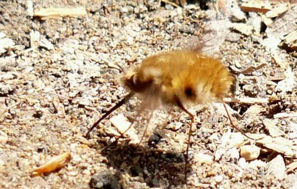

2026.11.23 09:31
愛しい家・その17 桜咲きました！ ― 2009年5月2日
これは2009年5月の記録です。季節は巡りますが、懐かしい一篇としてご紹介します。
遅咲きの我が家の桜が、ようやく咲きました。
咲き始めたのは三、四日前のこと。前日の暖かさで一気に花が開き、満開になりました。

前日は、いなり寿司と、こごみのお味噌汁を作りました。桜を眺めながら外で食べると、格別に美味しく感じます。
花が咲くと、その周りの様子まで変わってきます。桜が咲いたとたん、蝶や蜂などの昆虫たちが集まってくるようになりました。
前日も、モンシロチョウやムラサキシジミなどが、花から花へと飛んでいました。
そして、珍しい昆虫もやって来ました。ビロードツリアブです。

ふさふさとした姿は、まるでキーウィのようで、とても可愛らしく、ユーモラスです。
これからの季節、どんな虫たちに出会えるのか、楽しみです。
――もんの感想
満開を「美しい」で終わらせず、外で味わう一食の喜びや、花に集まってくる小さな命の一つひとつにまで目を向ける――その感性が、この家の暮らしを豊かにしているのだと感じます。前回の蕾から満開へと、時間を積み重ねて季節を待つ姿も素敵です。小さな出会いを楽しみにできる心が、次の季節をまた美しくするのだと思います。
この記事は note でも公開しています：https://note.com/kunitokotachi369/n/n781626b4c3b1